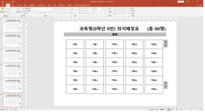
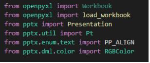
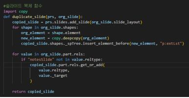
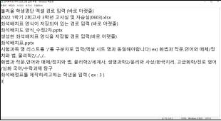

좌석배치표 자동제작 프로그램
AIDA 홈으로
1. 제작한 프로그램 : 좌석배치표 자동제작 프로그램
2. 프로그램 구동 방식
파이썬으로 작성된 프로그램을 실행하면 ppt를 이용하여 만들어진 좌석배정표 양식에 파이썬 프로그램이 python-pptx 라이브러리를 활용하여 ppt에 데이터(학생 이름, 과목명, 인원수 등)를 자동으로 입력하는 방식이다.
데이터는 엑셀로 만들어진 문서에서 openpyxl 라이브러리를 이용하여 불러온다.
3. 프로그램 코드 설명
1) 좌석배정표 양식 제작
우선 코딩에 앞서 그림1과 같이 프로그램을 실행하면 시험 과목명, 고사실, 각 반 인원수,
학생별 자리가 입력될 양식을 PPT로 제작해두었다.

고사실 별로 학생 수가 다르고, 학생 수가 25명 이하일 때, 26명일 때, 27명일 때, 28명일 때, 29명일 때, 30명일 때 모두 자리 배치가 달라지므로 각 경우별로 총 6개의 슬라이드를 만들어두었다.
2) 파이썬을 이용한 프로그램 제작

이번 프로그램에서는 Excel 파일과 PPT 파일을 파이썬으로 다루기 위해 openpyxl 패키지와 pptx 패키지를 불러와 사용하였다.
2-1) 슬라이드 복제 함수 정의
기존 양식을 복제하여 그 위에 데이터를 입력해야 하므로 ppt 슬라이드를 복제하는 함수를 정의하였다.

이 함수는 pptx 패키지를 이용한 개발자분들이 미리 제작하여 구글에 코드를 공유해두신 것을 그대로 사용하였다.
2-2) 프로그램 구동을 위한 기본 작업

고사실 정보가 담긴 엑셀파일·좌석배정표 양식·제작된 좌석배정표의 파일이름 및 저장경로와 프로그램 구동에 필요한 몇 가지 설정사항을 그림2와 같이 메모장에 입력받고, 파이썬 내장함수인 open() 함수와 readlines() 함수를 이용하여 값을 불러온뒤 excel_file_path, ppt_file_path,save_path,subject,grade_value 라는 변수에 저장하였다.